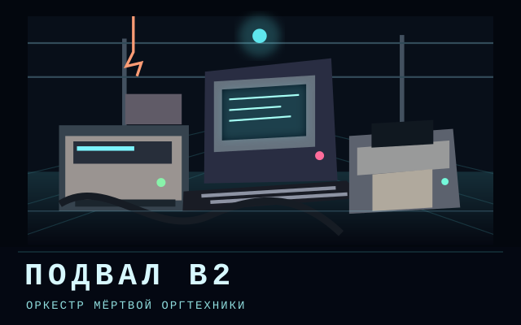
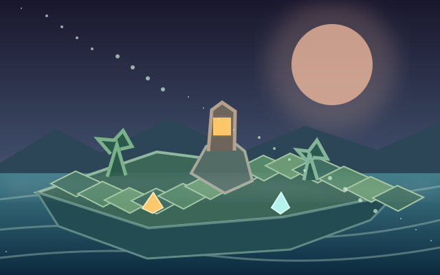

Подвал B2 — оркестр оргтехники
Разбуди 15 старых машин и сыграй собственную мелодию из звуков принтеров, компьютеров и сканеров. На ПК и телефоне.
META GAMES Lab · Авторские игры без рекламы
Открой мрачные подводные миры, загадочный офис и необычный музыкальный подвал. Эта подборка объединяет игры META GAMES Lab с таинственной атмосферой и собственными историями.

Разбуди 15 старых машин и сыграй собственную мелодию из звуков принтеров, компьютеров и сканеров. На ПК и телефоне.

Погружение в странный, беспокойный подводный мир за пределами света.

Исследование мира под водой и его забытых следов.

Изометрический мир таинственного офиса.

Светящаяся жизнь среди темноты глубоководного мира.
В Подвале B2 можно создавать мелодии из звуков оргтехники. В Underwater World и Затонувшем городе — исследовать глубины, а ASQURA OFFICE погружает в мир загадочного офиса.
Все ссылки «Играть» ведут на версии игр в META GAMES Lab. Для подробностей о каждом мире открой его страницу или изучи историю Зерна последнего мира.